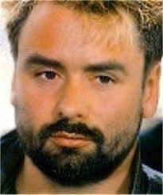

Biography
Luc Paul Maurice Besson; born 18 March 1959) is a French filmmaker. He directed or produced the films Subway (1985), The Big Blue (1988), and La Femme Nikita (1990).

Associated with the Cinéma du look film movement, he has been nominated for a César Award for Best Director and Best Picture for his films Léon: The Professional (1994) and The Messenger: The Story of Joan of Arc (1999).

He won Best Director and Best French Director for his sci-fi action film The Fifth Element (1997). He wrote and directed the sci-fi action film Lucy (2014) and the space opera film Valerian and the City of a Thousand Planets (2017).

In 1980, near the beginning of his career, he founded his own production company, Les Films du Loup, later renamed Les Films du Dauphin. It was superseded in 2000 when he co-founded EuropaCorp with longtime collaborator Pierre-Ange Le Pogam.

As writer, director, or producer, Besson has been involved in the creation of more than 50 films.
HI
Tim Berners-Lee, born June 8, 1955 in London, is a British physicist and computer scientist, principal inventor of the World Wide Web (WWW, the Web) while he...
News
Here's the latest celebrity news.
Achievements


Sir Tim Berners-Lee has made significant contributions to the development of the World Wide Web.
Events
Sir Tim Berners-Lee attended the World Wide Web Conference in 1991.
Photos and Videos


Léon
~1994~

Dogman
~1994~

Lucy
~2014~
Links
Here are some useful links to other websites.
Sir Tim Berners-Lee has made many useful links to other websites.